# 基本数据类型
# 基本数据类型
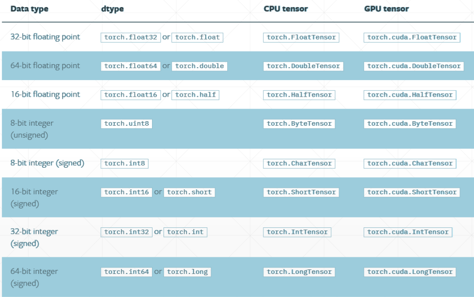
# 常用类型
- FloatTensor
- DoubleTensor
- ByteTensor
- IntTensor
- LongTensor
# 标量
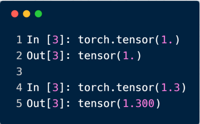
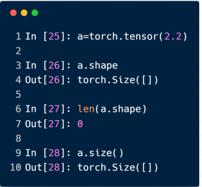
常用来表示 Loss
# 一维张量
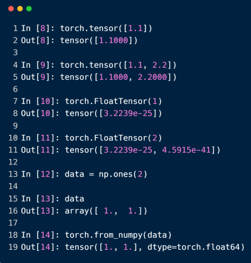
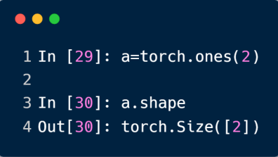
有三种方式：
- 给定内容生成一维张量
- 给定维度大小生成一维张量
- 从 np 中得到一维张量
常用于 Bias 神经元的偏置，和 Linear Input
# 二维张量
dim、size () 和 shape 的区分。对于一个维度为 [2, 2] 这样的张量，它的：
- dim 为 2，也就是数学上的 Rank，秩；
- size () 和 shape 则返回这个张量的形状，size () 是方法，shape 是属性；
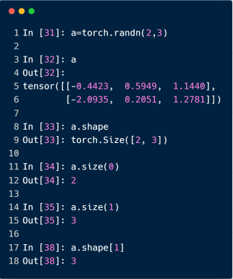
常用来表示带有 Batch 的 Linear Input，例如 [4, 784]
# 三维张量
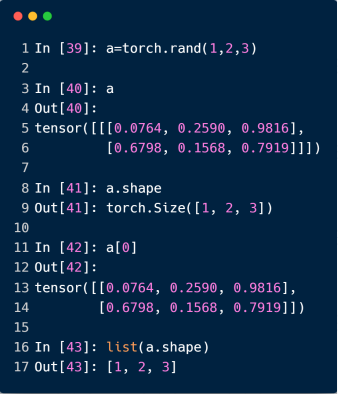
常用来表示带有 Batch 的 RNN Input，例如 [10, 20, 100]，表示一句话有 10 个单词 W，我们送入 20 句话进行训练 Sentence，每个单词用个 100 长度的一维向量表示
# 四维张量
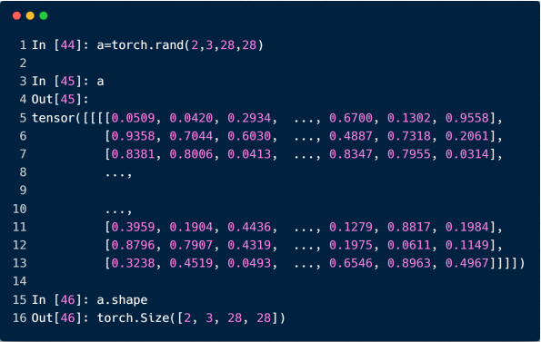
常用来表示 CNN，例如 [b, c, h, w]
# 获取张量的大小
用 numel 方法，即 num of element
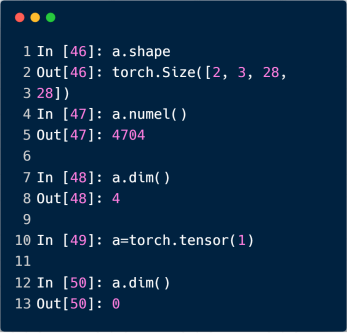
# 创建 Tensor
# 创建 Tensor
用 torch.FloatTensor 创建 Tensor：
- 当接收到一个 List，则根据现有数据创建 Tensor
- 当接收到不是 List，则根据维度创建 Tensor
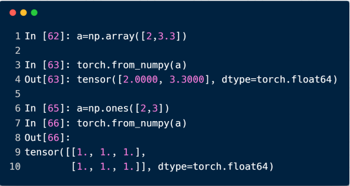
# 创建未初始化的 Tensor
- Torch.empty()
- Torch.FloatTensor(d1, d2, d3)
- Torch.IntTensor(d1, d2, d3)
NOT torch.FloatTensor([1, 2]) = torch.tensor([1, 2])
未初始化的数据会有很多极端值，如下，所以记得跟上后续步骤将数据覆盖掉
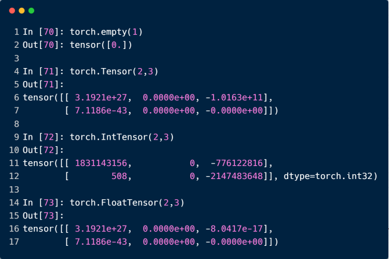
PyTorch 如果没有手动配置，默认会生成 FloatTensor
可以使用
torch.set_default_tensor_type(torch.DoubleTensor) 设置其他类型
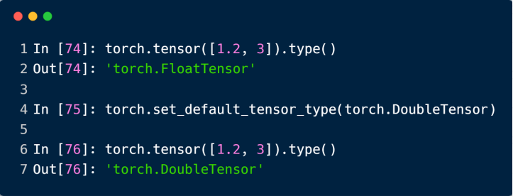
# 创建均匀分布的 Tensor
rand
- 随机从 [0, 1] 分布中生成数据
rand_like
- 接收一个 tensor，读取 tensor 的 shape，再送到 rand 函数
randint
- 四个参数，例如 randint (1, 10, 3, 3)，生成 [1, 10) 范围内的 3 x 3 的张量
均匀采用 0 ~ 10 的 Tensor，要用 x = 10 * torch.rand (d1, d2)，randint 只能采样整数
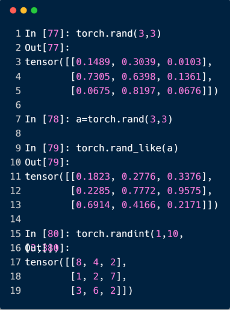
# 创建正态分布的 Tensor
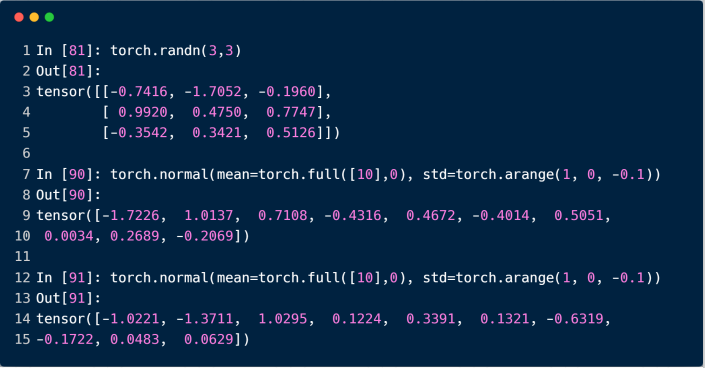
# 创建指定值的 Tensor
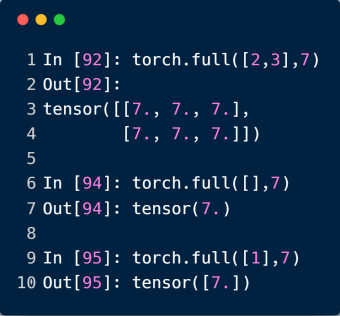
# 创建递增 / 递减的 Tensor
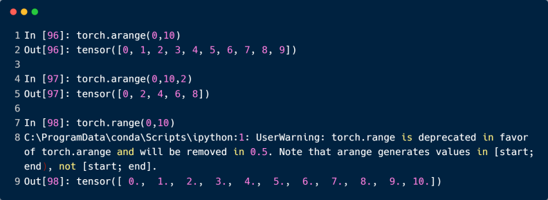
# 创建等间距的 Tensor
注意，arange 参数范围是 [0, 10)，而 linspace 参数范围则是 [0, 10]
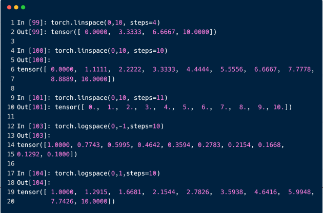
logspace 默认是以 10 为底数，可以通过 base 参数设置为 2，10，e 等
# 创建特殊的 Tensor
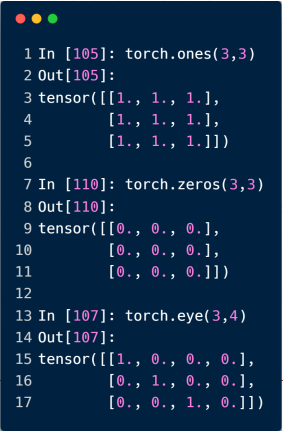
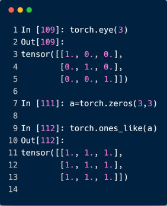
# 创建随机打散的 Tensor
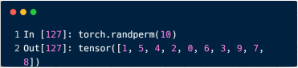
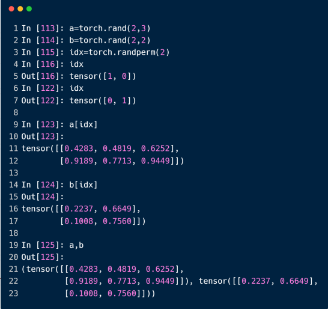
# 索引和切片
关键知识：
0:28:2 对应start:end:step，不包含 end
# 索引前 / 后 N 个
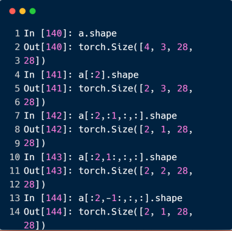
# 隔行索引
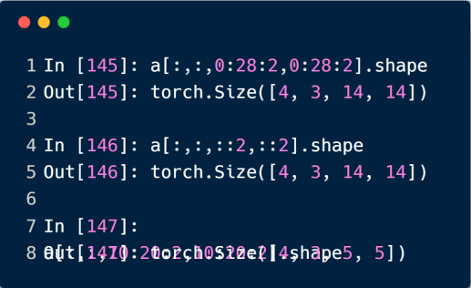
# 指定索引采样
data.index_select(0, torch.tensor([0, 2])) ，表示在第 0 个维度上，取 0 和 2 两个索引的数据
data.index_select(1, torch.tensor([1, 2])) ，表示在第 1 个维度上，取 1 和 2 两个索引的数据
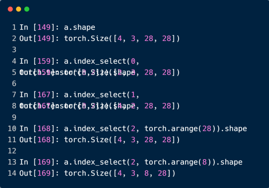
# ... 的使用
当有 ... 出现时，右边的索引需要理解为最右边的维度。意思就是 ... 必须能被推测出代表哪几个维度才行
例如：
[0, ..., ::2] 和[0, :, :, ::2] 等价，... 只是简化写法罢了
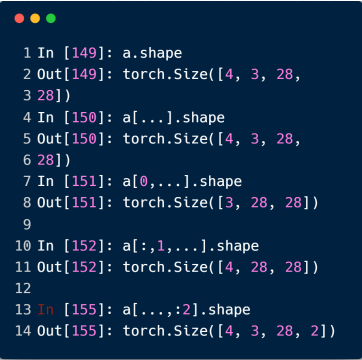
# 根据掩码索引
缺点是会将索引后的数据打平。
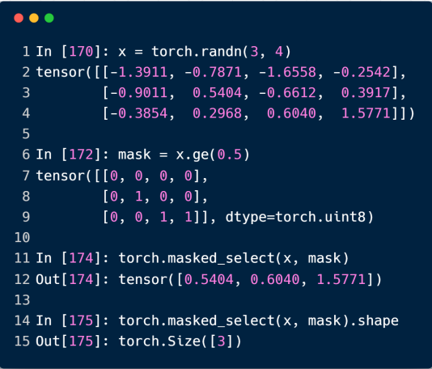
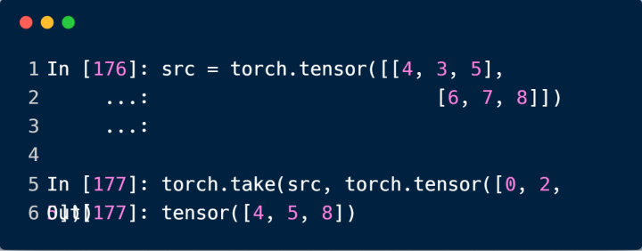
# 维度变换
# view /reshape 维度变换
只要保证 numel () 一致即可
数据的存储 / 维度顺序非常重要，需要时刻记住！
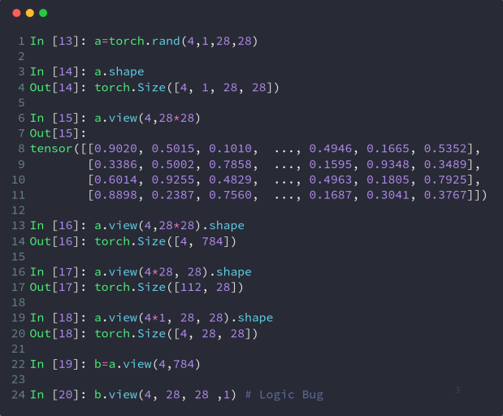
# squeeze /unsqueeze 删减维度 / 增加维度
# unsqueeze 增加维度
正数增加维度是在指定索引的前面增加；负数增加维度是在指定索引的后面增加
尽量不要使用负数增加维度，易混淆
参数取值在 [-a.dim () - 1, a.dim ()]，即 [-5, 4]
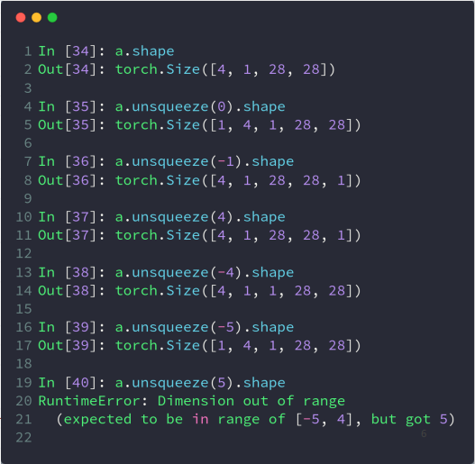
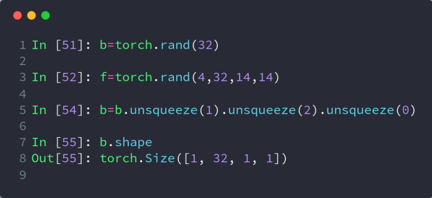
配合扩张 Broadcasting 操作，就可以很方便的给图像上的每个像素添加一个偏置了
# squeeze 删减维度
不指定参数就将所有 dim 为 1 的维度删除
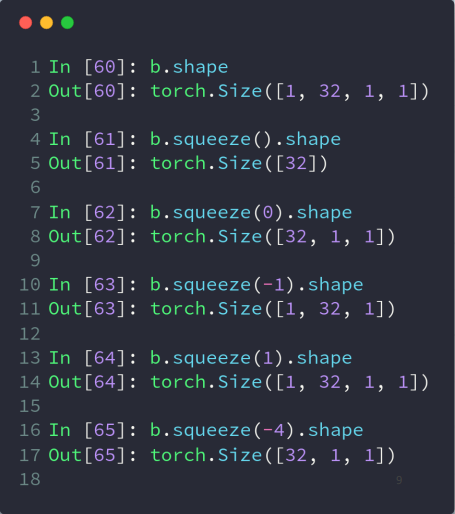
# transpose /t/permute 维度转置
t () 只能用于二维张量
transpose () 可以指定参数交换指定维度
view 会导致维度顺序关系变得模糊，所以需要人为跟踪
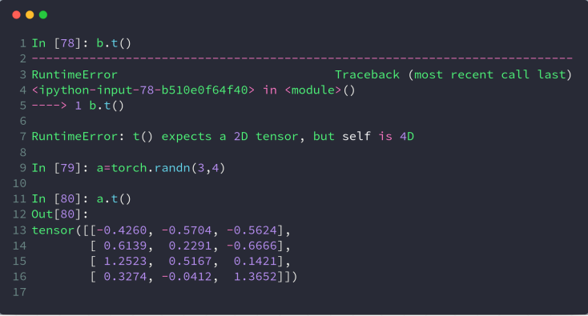
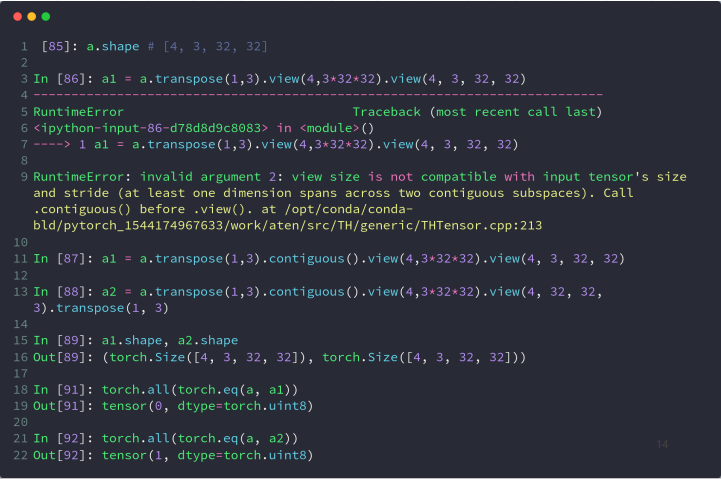
[b, h, w, c] 是 Numpy 存储图片的格式，所以需要这一步才能到处 Numpy
permute 可以一步到位，直接调整多个维度的顺序
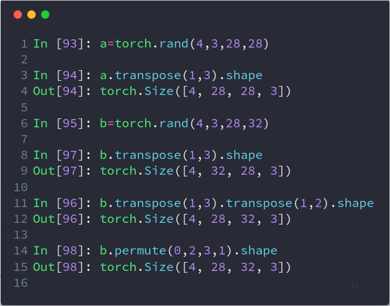
# expand /repeat 维度扩展
expand：broadcasting
- 不会主动复制数据，只有维度为 1 的才能扩张成其他维度
repeat：memory copied
- 会发生实实在在的内存拷贝
- 和 expand 参数区别是，repeat 参数指的是每一个维度要拷贝的次数
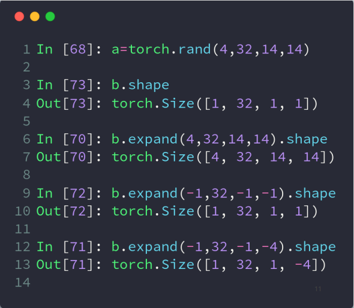
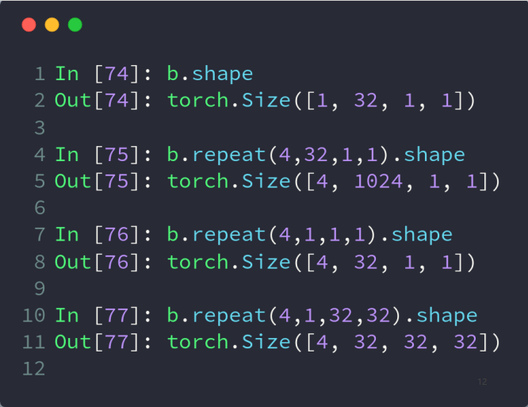